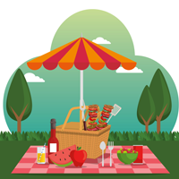
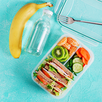
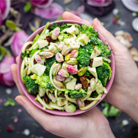

Food and Nutrition
Nurishment
In relation to studying, nothing beats a very good kid book. Whilst there are many helpful apps to be had to train your children about health and nutrition, a book can be an interesting resource. So, we’re taking the opportunity to feature to our beyond article on top gardening books for youngsters, with a look at excellent youngsters books on vitamins & healthful consuming. Permit’s help our youngsters turn out to be greater informed about healthy ingesting and nutrients at the same time as they have a laugh analyzing one or more of the following youngster’s books.
Four new kid books about health and nutrients that your children will revel in.
01
What’s on my plate (ages 5-8)
- The identity says it all of this nutrients e-book for early readers. Starting with a chapter on Why We need Meals, the eBook builds a basis primarily based on the need of vitamins in the everyday life of kids.
- The e-book also takes a realistic stance and dedicates chapter 5 to every so often foods which address what we consult with as “junk food”, letting kids understand about the effect that sugary snacks have on their fitness, without chastising them for taking part in them, on occasion.
- What’s On My Plate also consists of some fun recipes, a thesaurus, different endorsed reads, and a fun information section which has all been packaged in a playful and easy to digest layout. (author – VYB / publisher – CVY)

02
Forest Festival for kids (8-10 years of age)
- Launched this spring, The Forest Dinner Party for children is an observe-as much as the broadly a success of The forest dinner party (for grown-ups).
- The big apple instances bestselling creator XYZ supplies a child-pleasant model of recipes with a view to inspire your kids to get more nutrients and minerals of their each day weight loss plan.
- ABC also supplies ideas for eating room desk crafts, kid’s celebration principles, and a thoughtfully illustrated guidebook on protection in the kitchen. Whilst this is a vegetarian focused cookbook for youngsters, it neither studies with an agenda nor attempt to steer your kids to make a way of life choice.
- The woodland banquet for youngsters surely lets in younger readers to study greater about nutritious fruits and vegetables and the way they may be organized to create a laugh and tasty snacks and food. (author – XYZ / writer – BCD)

03
What’s for Lunch? (ages four-8)
- What’s for Lunch? is the brand new release from the award-winning allow’s-examine-and-discover-Out science series.
- Vetted for accuracy by means of Keelia O’Malley MPH and Dr Carolyn Johnson PhD, FAAHB, NCC, LPA this kids e-book examines introductory vitamins ideas appropriate to kids elderly four to 8 and helps commonplace middle mastering standards, next technology science standards, and STEM.
- Superbly written and illustrated this book will serve as your child’s manual to studying approximately wholesome consuming on a daily foundation. (writer – SDF / publisher – BHU)

04
Teddy tries a Veggie (ages four-8)
- For our remaining access, we thought we placed an e-book on your path if your youngsters are large on Kindle.
- Teddy attempts a Veggie follows Theodora (aka Teddy), a 5-year-old who enjoys gardening but detests ingesting the very equal veggies (broccoli, Brussel sprouts, etc.) she grows, making her right away identifiable with identical-age readers.
- But, when Teddy comes throughout a motley group of end result and vegetables in her garden, she embarks upon a scrumptious and nutritious adventure.
- As an e-book, Teddy attempts a Veggie gives interactive capabilities to in addition engage younger minds. (author – XYZ / publisher – CCG)
- Want to read such blogs on our website? Do visit us as all these are based on deep research conducted by our experts. The activities in our Smart Books will be based on such research, so keep a track and purchase these miracle books to drastically change the lives of your munchkin.